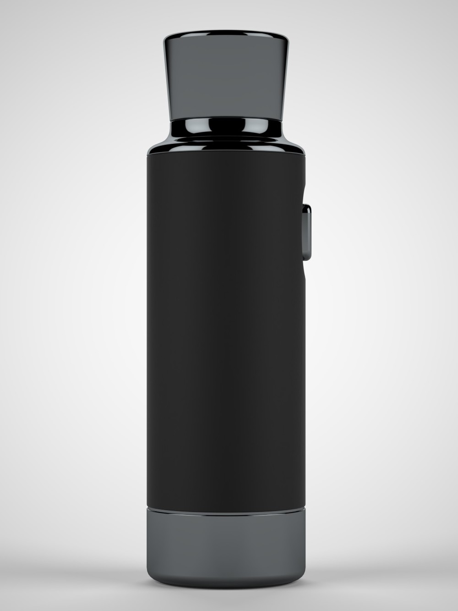
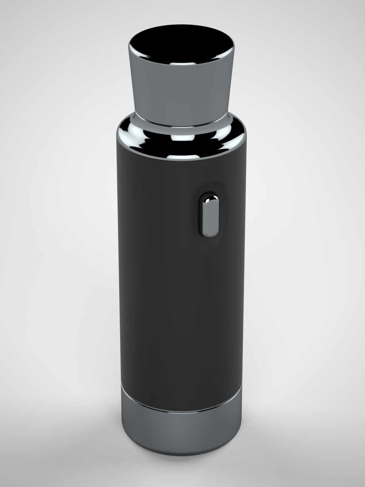
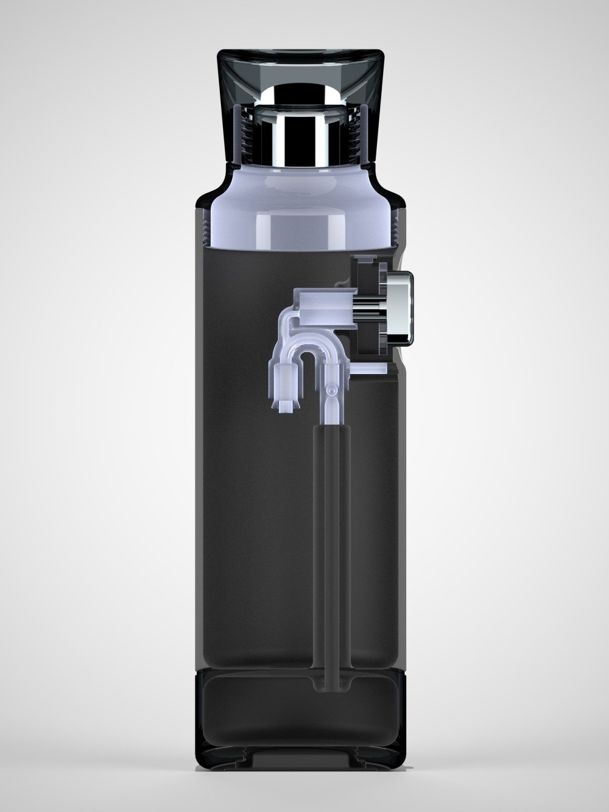

Industrial Design · Product
Flavor Dispensing Water Bottle
This water bottle incorporates an innovative mechanism for dispensing natural flavorings into water. A conveniently placed button on the side of the bottle allows users to release flavoring with ease. When the button is pressed, a pressure differential draws a precise amount of flavoring and sprays it into the water, ensuring consistent taste.
The bottle was designed to explore opportunities in the rapidly growing flavored water market. Early prototypes were developed and tested using FDM-printed components.
- Mechanism Pressure differential
- Control Side button
- Prototyping FDM printing


